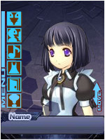

|  |
『さぽている』ユーザーにフェスタからプレゼント！フェスタ期間中、このページから繋がっている様々な場所に『さぽているの種』が埋まっています。その種を見つけると、なんとさぽているの中で使えるアイテムになるのです！色んなページを回って種を探し、さぽているライフを充実させましょう！ |
■今回(6/30)のヒント■
同日更新している人気無料コンテンツのページに最後の種が！
■今回(5/16)のヒント■
今回は変化球。いつものアイコンは無いよ！
開発日記「テレモのある広場」にいるサーラからもらおう！
■今回(5/9)のヒント■
アルポータルでヒロイン・オリカが下克上！？
あなたも様子を見に行ってみてはいかが？
※5/9配布のさぽているの種は通し番号が9番となっており、
8番が存在しない形となっておりますが、さぽているの種（8）は
ゲーマガ6月号に掲載されているゲーマガオリジナルボディの番号と
なっております。ご了承下さい。
■今回(4/18)のヒント■
そういえば、サイン入りのアルトネリコ２をプレゼント、
だって！知ってた？
■今回(4/10)のヒント■
WEBラジオを聞いて感想をトウコウスフィアに応募すれば、
自然に２つ見つかるハズ！
■今回(3/20)のヒント■
４つのうち１つは下のリンク、２つはこのページから
直リンクのページ。最後の１つは少し難しいよ！
どこかのトップページにあるみたい。
まずは以下のリンクにある種をゲットしよう！
同じように、色々なページに種が隠れています。
見つけ出してクリックしてね！
| 『さぽている』とは？ |
誰でもお手軽に登録できて奥が深い、女の子育成ゲーム付き多機能ブログパーツです。１日数回女の子とレッスンや調合を行い、アイテムや服、歌を作っていきます。また、ブログパーツとして女の子に好きな言葉を喋らせたり、お客さんから感想をもらったり…という事も可能です。
登録は簡単！興味を持ったら以下のバナーをクリック！
|
|
|